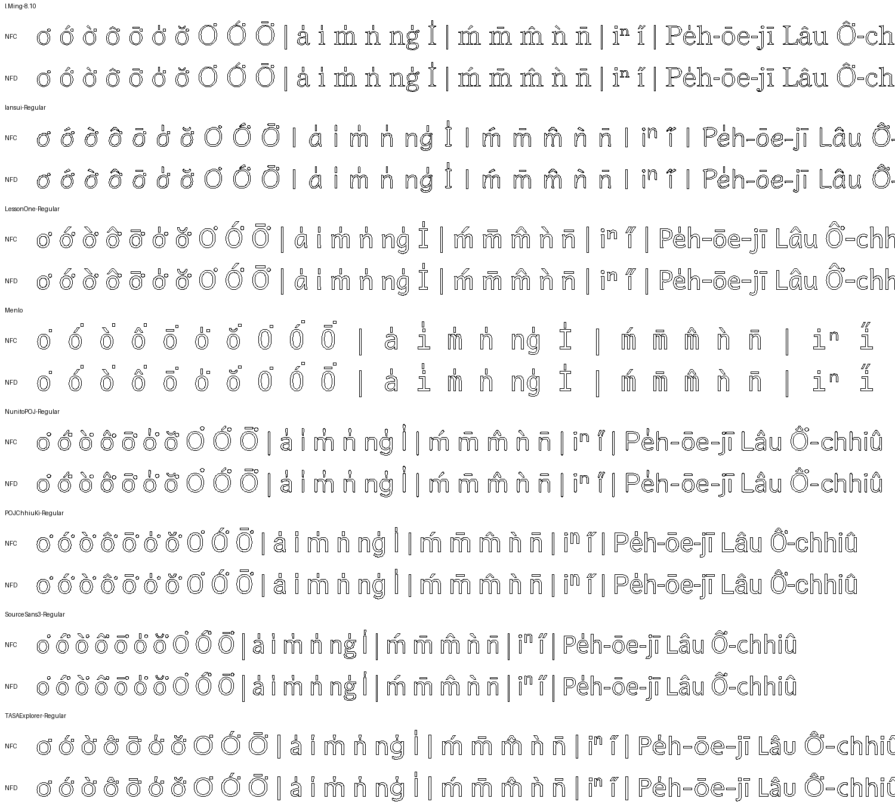

24 款字型實測、推薦清單與樣張
涵蓋純 POJ 與漢羅開源字型推薦、可即時檢視字碼的線上測試台、24 款字型完整 HarfBuzz 互動檢驗資料，以及 NFC 與 NFD 並列對照樣張。
推薦的免費開源字型
純白話字（POJ）內文推薦
| 字型 | 風格 | 授權 | 技術 | 說明 |
|---|---|---|---|---|
| Lesson One | 簡潔無襯線 | OFL 1.1 | B + A | 無襯線首選；NFC、NFD 與反向順序全數正確。 |
| POJ Chhiu-ki | POJ 專用 | Apache-2.0 | A | 專為白話字打造，全套錨點定位乾淨俐落。 |
| Charis、Doulos、Gentium（SIL） | 書籍襯線 | OFL 1.1 (RFN) | A + C | 出版級品質；採獨立佔位圓點（方式 C）避免碰撞。分支修改需更名。 |
| TASA Explorer / Orbiter | 現代無襯線 | OFL 1.1 | B + A | 從 GitHub 下載完整版表現完美；切勿從 Google Fonts 載入（會刪掉 POJ 調號）。 |
| Source Sans 3 | 無襯線 | OFL 1.1 | A | 除罕見第九調 ŏ͘／Ŏ͘ 漏設錨點外皆正確；避免從 Google Fonts 載入。 |
漢字＋白話字混排（漢羅）推薦
| 字型 | 風格 | 授權 | 技術 | 說明 |
|---|---|---|---|---|
| jf open 粉圓 2.1（Huninn） | 圓體 | OFL 1.1 | B + A | 所有測試音節完全正確；Google Fonts 附有台語專屬切塊。 |
| 芫荽 Iansui | 手寫楷體感 | OFL 1.1 | B + A | 所有測試音節完全正確；Google Fonts 附有台語專屬切塊。 |
| WD-XL Lubrifont TC 滑油字 | 黑體無襯線 | OFL 1.1 | B + A | ccmp 動態組字搭配完整 mark／mkmk 安全網。 |
| 一點明體 I.Ming | 明體 | IPA Font 1.0 | B + A | 品質優秀；U+0358 錨點僅設於 o ō，其餘由連字涵蓋。採 IPA 授權而非 OFL。 |
| 源樣明體 GenYo Min | 明體 | OFL 1.1 | 僅 B | 本站採用的字型。以 ccmp 預繪字形呈現（右點緊貼字母碗緣）；無 mark 表作為未收錄組合的安全網。 |
| 豆腐烏／Tāu-hū 家族（Khu-lé-iòng、Môo-tn̄g、Tauhu Oo） | 多款 | OFL 1.1 | 僅 B | 常見組合透過 ccmp 顯示正確；無 GPOS mark 安全網。 |
純 POJ 內文應避開的字型
| 字型 | 實測缺陷 |
|---|---|
| EB Garamond | 完全缺少 U+0358（顯示豆腐字）；U+030D 未設錨點；i̍ 未去點。部分台語字型清單誤列此款，無法用於 o͘。 |
| 字咍 Taigi IVS 字型（作為一般 POJ 內文） | 漢字注音極佳（8,021 筆 IVS），但歐文區無 mark 表且 i̍ 保留點，不適合長篇純 POJ。 |
| Arial（macOS 內建版） | U+0358 為無錨點疊印；因字型含有 mark 表，HarfBuzz 關閉備援，圓點掉到字母後方。 |
| Helvetica、Geneva、Menlo（macOS） | 無 mark 表且 i̍ 未去點；HarfBuzz 備援讓大寫 Ó͘ Ō͘ 圓點高高飄起。 |
想親自測試手邊的任何字型？
請前往專屬的即時 POJ 測試台 →，可即時切換本機字型、開啟 letter-spacing、一鍵複製 NFC／NFD／反向順序並檢視每個字元的 Unicode 字碼。
24 款字型完整實測總表（Regular 字重）
下列字型除 EB Garamond（缺少 U+0358）之外，全數皆有收錄 U+0358、U+030D 與 U+207F。「mark」欄表示是否具備 GPOS mark 定位功能。
| 字型 | 授權 | 技術 | mark | 無點 i̍ | 詳細實測觀察 |
|---|---|---|---|---|---|
| Source Sans 3（Adobe） | OFL 1.1 | A | ✓ | ✓ | ŏ͘ 與 Ŏ͘ 漏設錨點 → 圓點落於 (0,0) 無備援；Google Fonts 會刪調號。其餘乾淨。 |
| POJ Chhiu-ki（aiongg） | Apache-2.0 | A | ✓ | ✓ | 專為 POJ 設計（81 個 U+0358／54 個 U+030D 錨點基礎字），全部音節乾淨。 |
| NunitoPOJ（aiongg／字咍輸入法隨附） | OFL 1.1 | B (liga)、A、PUA | ✓ | ✓ | 含 PUA E400–E435（55 格）。liga 採非正規順序故在 HarfBuzz 不會觸發；但關閉 liga 後仍可藉 ccmp＋錨點正確顯示 o͘ 與 i̍。 |
| Lesson One（But） | OFL 1.1 | B（ccmp 雙順序）+ A | ✓ | ✓ | 最佳實務典範。 |
| TASA Explorer / Orbiter | OFL 1.1 | B + A | ✓ | ✓ | GitHub 完整版表現優異；Google Fonts 網頁版缺少 U+0358/U+030D/ⁿ。 |
| jf open 粉圓 2.1（Huninn） | OFL 1.1 | B + A | ✓ | ✓ | 全部正確；Google Fonts 具專屬台語切塊 #106。 |
| 芫荽 Iansui（But） | OFL 1.1 | B + A | ✓ | ✓ | 全部正確；Google Fonts 具專屬台語切塊 #104。 |
| WD-XL Lubrifont TC 滑油字 | OFL 1.1 | B（ccmp 動態組字）+ A | ✓ | ✓ | 測試音節全過，並附 24 筆 IVS。 |
| 一點明體 I.Ming | IPA Font 1.0 | B + A | ✓ | ✓ | 60,597 字形；U+0358 錨點僅設於 o ō，其餘由 ccmp 連字覆蓋。 |
| 源樣明體 GenYoMin2 TW | OFL 1.1 | 僅 B | ✗ | ✓ | 圓點緊貼字母（略近角狀）；未收錄組合仰賴引擎備援。本站採用字型。 |
| 豆腐烏家族（Khu-lé-iòng／Môo-tn̄g／Tauhu Oo） | OFL 1.1 | 僅 B | ✗ | ✓ | 與源樣明體相同：常見組合由 ccmp 妥善覆蓋，但無 GPOS mark 安全網。 |
| Charis / Doulos / Gentium（SIL） | OFL 1.1 (RFN) | A + C | ✓ | ✓ | 表現卓越；獨立佔位圓點（GDEF 類別 1，寬 200–279u）；含 223 個 PUA 字形。分支需更名。 |
| EB Garamond | OFL 1.1 | A（缺 U+0358） | ✓ | ✗ | U+0358 顯示豆腐字；U+030D 未設錨點偏移。不可用於 o͘。 |
| 字咍 Taigi IVS 字型 | OFL / Apache-2.0 | D + IVS 注音 | ✗ | ✗ | 每款含 8,021 筆漢字 IVS 注音；純 POJ 內文較弱（無 mark、i̍ 留點）。 |
| Arial（macOS 版） | 專有授權 | A（030D）+ D（0358） | ✓ | ✓ | U+0358 為無錨點疊印；因具 mark 表，HarfBuzz 關閉備援。 |
| Helvetica / Geneva / Menlo（macOS） | 專有授權 | D | ✗ | ✗ | 無 GSUB/GPOS；HarfBuzz 備援使 Ó͘ Ō͘ 圓點浮空。CoreText 結果可能不同（AAT）。 |
網站列表中有提及但尚未測試的字型
- Caivun（itch.io；頁面標示 SIL OFL）— 待直接下載字型檔檢測。
- Kaukhia（itch.io；CC BY 4.0）— 創用 CC 官方不建議將 CC 授權用於字型，但仍允許再使用。
- Indeciso — 下載網站為純 JavaScript 介面，尚未取得檔案。
- 昭源（Chiron）（OFL）— 官網未宣稱支援 POJ（註：Chiron Hei HK 與 Chiron Sung HK 有出現在 55 款具 POJ 字碼的 Google Fonts 清單中，見普查頁）。
- 嘉市體 — 免費使用但禁止修改，非開源字型。
24 款字型 HarfBuzz 互動檢驗器
直接檢視 data/poj-font-audit.json 的完整自動化檢測數據：逐字碼覆蓋率、GSUB/GPOS 功能標籤、U+0358/U+030D 錨點數量，以及 25 個音節在 NFC 與 NFD 下的整形機制。
高解析度 NFC vs NFD 渲染樣張
透過 HarfBuzz 渲染產生。每款字型皆並列兩行：第一行為 NFC、第二行為 NFD，呈現標準 POJ 測試字串。點擊圖片可放大檢視。

docs/img/specimen-0.png）— 點擊圖片放大檢視原尺寸。
docs/img/specimen-1.png）— 點擊圖片放大檢視原尺寸。
docs/img/specimen-2.png）— 點擊圖片放大檢視原尺寸。